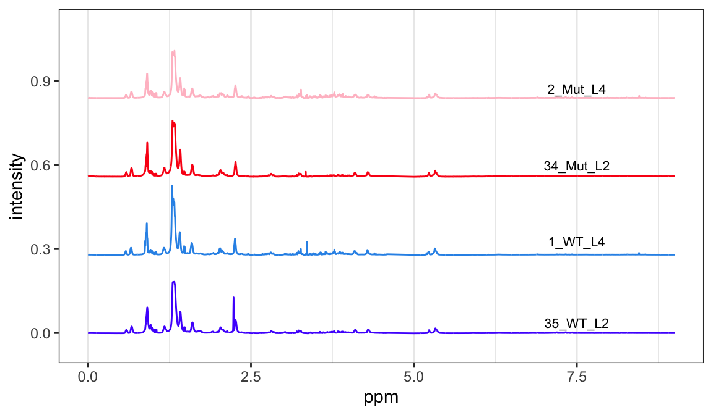

If you aren’t familiar with ChemoSpec, you might wish to look at the introductory vignette first.
Background
Blaise et al. (2021) have published a detailed protocol for metabolomic phenotyping. They illustrate the protocol using a data set composed of 139 1H HR-MAS SS-NMR spectra (Blaise et al. 2007) of the model organism Caenorhabditis elegans. There are two genotypes, wild type and a mutant, and worms from two life stages.
This series of posts follows the published protocol closely in order to illustrate how to implement the protocol using ChemoSpec. As in any chemometric analysis, there are decisions to be made about how to process the data. In these posts we are interested in which functions to use, and how to examine the results. We are not exploring all possible data processing choices, and argument choices are not necessarily optimized.
Import the Data
The data set is large, over 30 Mb, so we will grab it directly from the Github repo where it is stored. We will use a custom function to grab the data (you can see the function in the source for this document if interested). The URLs given below point to the frequency scale, the raw data matrix and the variables that describe the sample classification by genotype and life stage (L2 are gravid adults, L4 are larvae).
urls <- c("https://raw.githubusercontent.com/Gscorreia89/chemometrics-tutorials/master/data/ppm.csv",
"https://raw.githubusercontent.com/Gscorreia89/chemometrics-tutorials/master/data/X_spectra.csv",
"https://raw.githubusercontent.com/Gscorreia89/chemometrics-tutorials/master/data/worm_yvars.csv")
raw <- get_csvs_from_github(urls, sep = ",") # a list of data sets
names(raw)[1] "ppm.csv" "X_spectra.csv" "worm_yvars.csv"Construct the Spectra Object
The format of the data as provided in Github is not really suited to using either of the built-in import functions in ChemoSpec. Therefore we will construct the Spectra object by hand, a useful exercise in its own right. The requirements for a Spectra object are described in ?Spectra.
Process the Raw Data
First, we’ll take the results in raw and convert them to the proper form. Each element of raw is a data frame.
# frequencies are in the 1st list element
freq <- unlist(raw[[1]], use.names = FALSE)
# intensities are in the 2nd list element
data <- as.matrix(raw[[2]])
dimnames(data) <- NULL # remove the default data frame col names
ns <- nrow(data) # ns = number of samples - used later
# get genotype & lifestage, recode into something more readible
yvars <- raw[[3]]
names(yvars) <- c("genotype", "stage")
yvars$genotype <- ifelse(yvars$genotype == 1L, "WT", "Mut")
yvars$stage <- ifelse(yvars$stage == 1L, "L2", "L4")
table(yvars) # quick look at how many in each group stage
genotype L2 L4
Mut 32 33
WT 34 40Assemble the Spectra Object by Hand
Next we’ll construct some useful sample names, create the groups vector, assign the colors and symbols, and finally put it all together into a Spectra object.
# build up sample names to include the group membership
sample_names <- as.character(1:ns)
sample_names <- paste(sample_names, yvars$genotype, sep = "_")
sample_names <- paste(sample_names, yvars$stage, sep = "_")
head(sample_names)[1] "1_WT_L4" "2_Mut_L4" "3_Mut_L4" "4_WT_L4" "5_Mut_L4" "6_WT_L4" # use the sample names to create the groups vector
grp <- gsub("[0-9]+_", "", sample_names) # remove 1_ etc, leaving WT_L2 etc
groups <- as.factor(grp)
levels(groups)[1] "Mut_L2" "Mut_L4" "WT_L2" "WT_L4" # set up the colors based on group membership
data(Col12) # see ?colorSymbol for a swatch
colors <- grp
colors <- ifelse(colors == "WT_L2", Col12[1], colors)
colors <- ifelse(colors == "WT_L4", Col12[2], colors)
colors <- ifelse(colors == "Mut_L2", Col12[3], colors)
colors <- ifelse(colors == "Mut_L4", Col12[4], colors)
# set up the symbols based on group membership
sym <- grp # see ?points for the symbol codes
sym <- ifelse(sym == "WT_L2", 1, sym)
sym <- ifelse(sym == "WT_L4", 16, sym)
sym <- ifelse(sym == "Mut_L2", 0, sym)
sym <- ifelse(sym == "Mut_L4", 15, sym)
sym <- as.integer(sym)
# set up the alt symbols based on group membership
alt.sym <- grp
alt.sym <- ifelse(alt.sym == "WT_L2", "w2", alt.sym)
alt.sym <- ifelse(alt.sym == "WT_L4", "w4", alt.sym)
alt.sym <- ifelse(alt.sym == "Mut_L2", "m2", alt.sym)
alt.sym <- ifelse(alt.sym == "Mut_L4", "m4", alt.sym)
# put it all together; see ?Spectra for requirements
Worms <- list()
Worms$freq <- freq
Worms$data <- data
Worms$names <- sample_names
Worms$groups <- groups
Worms$colors <- colors
Worms$sym <- sym
Worms$alt.sym <- alt.sym
Worms$unit <- c("ppm", "intensity")
Worms$desc <- "C. elegans metabolic phenotyping study (Blaise 2007)"
class(Worms) <- "Spectra"
chkSpectra(Worms) # verify we have everything correct
sumSpectra(Worms)
C. elegans metabolic phenotyping study (Blaise 2007)
There are 139 spectra in this set.
The y-axis unit is intensity.
The frequency scale runs from
8.9995 to 5e-04 ppm
There are 8600 frequency values.
The frequency resolution is
0.001 ppm/point.
This data set is not continuous
along the frequency axis.
Here are the data chunks:
beg.freq end.freq size beg.indx end.indx
1 8.9995 5.0005 -3.999 1 4000
2 4.5995 0.0005 -4.599 4001 8600
The spectra are divided into 4 groups:
group no. color symbol alt.sym
1 Mut_L2 32 #FB0D16FF 0 m2
2 Mut_L4 33 #FFC0CBFF 15 m4
3 WT_L2 34 #511CFCFF 1 w2
4 WT_L4 40 #2E94E9FF 16 w4
*** Note: this is an S3 object
of class 'Spectra'Plot it to check it
Let’s look at one sample from each group to make sure everything looks reasonable (Figure @ref(fig:samplePlot)). At least these four spectra look good. Note that we are using the latest ChemoSpec that uses ggplot2 graphics by default (announced here).
p <- plotSpectra(Worms, which = c(35, 1, 34, 2), lab.pos = 7.5, offset = 0.008, amplify = 35,
yrange = c(-0.05, 1.1))
p
In the next post we’ll continue with some basic exploratory data analysis.
This post was created using ChemoSpec version 6.1.3 and ChemoSpecUtils version 1.0.0.